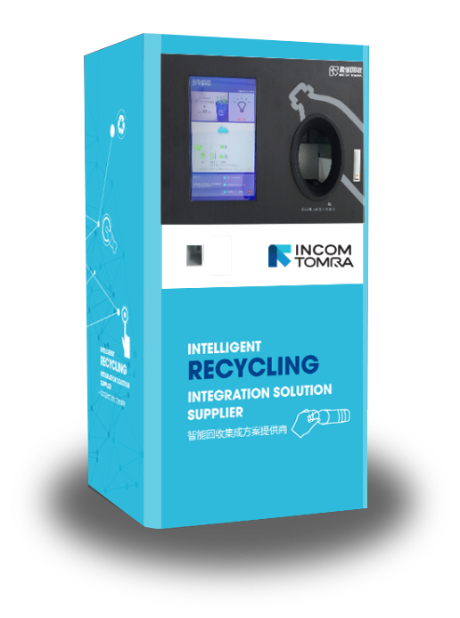

TRASH 2 CASH is a concept approach that'll help solve the world's 2 billion ton trash problem by allowing users to turn recycling into rewards. The intelligent recycling solution operates with physical recycling machines along with a social app with its primary function as for users to cash out digitally. The app allows users to invite friends, connect with them, find nearby Trash 2 Cash machines, and cash out rewards to their selected digital wallet. The system aims to eliminate openly dumped waste and help people develop a habit of recycling.